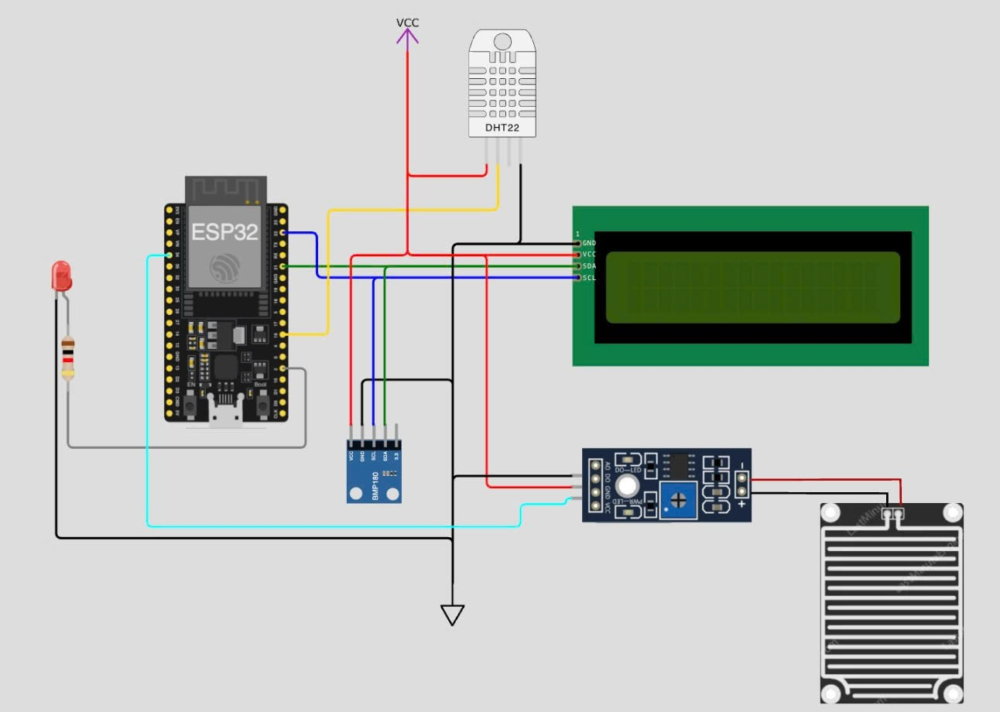

IoT Weather Station
IoT-based weather monitoring and prediction platform
SV
Tổng quan dự án
IoT Weather Station là hệ thống giám sát và dự báo thời tiết ứng dụng IoT, Cloud và AI. Hệ thống sử dụng ESP32 và các cảm biến môi trường để thu thập dữ liệu thời tiết theo thời gian thực, đồng bộ lên Firebase Cloud và hỗ trợ dự báo thông minh bằng AI.
Luồng hoạt động của hệ thống
🌧Sensor
→
🧠ESP32
→
☁Firebase Cloud
→
📈Web Platform
→
🤖AI Prediction
Các năng lực chính
- Giám sát thời tiết thời gian thực
- Đồng bộ dữ liệu lên Cloud
- Hiển thị trực quan trên nền web
- Dự báo thời tiết bằng AI
- Truy cập và theo dõi hệ thống từ xa
HỆ THỐNG PHẦN CỨNG

Chưa có ảnh prototype
Thêm file assets/prototype.jpg để hiển thị ảnh thậtSơ đồ kết nối phần cứng của hệ thống IoT